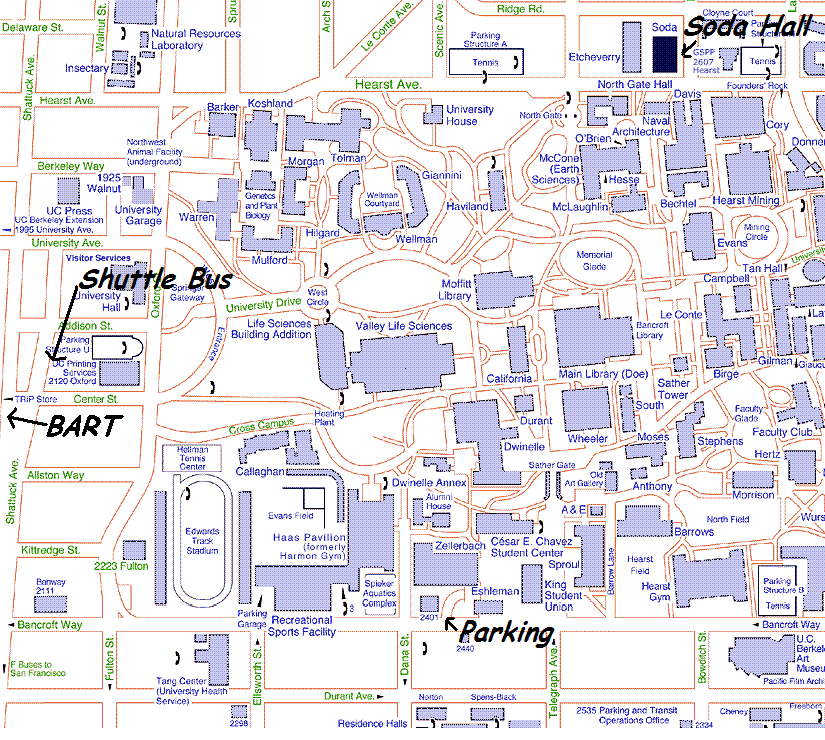

Venue for the Eighth Biennial Ptolemy Miniconference
The Ptolemy Ptutorial
will be held on Wednesday, April 15, 2008 in
540 A/B Cory
on the University of California, Berkeley campus.
The Ptolemy Miniconference will be held on Thursday, April 16, 2008
in the
Wozniak Lounge
430-8 Soda Hall
University of California
Berkeley, California 94720
The review will start at 8:30 AM and end at 5:30 PM. We will have
a reception from 5:30 - 7:00.
There are no specific hotel blocks reserved for the conference.
The best resource for hotels is the
UC Berkeley Housing Hotels page.
One way to find directions and hotels is to go to
Yahoo and
use the map facility to find an address near Cory and Soda Halls, such as
2599 Hearst Ave
Berkeley, CA 94720
which will yield these maps:
Directions
Directions to Soda Hall
Parking near Soda Hall can be difficult, we suggest you take
public transportation.
Instructions from BART
- If you take Bart, get off at the Downtown Berkeley station.
- Take the
UC Berkeley Shuttle (Cost: $1)
Note that it is possible to walk from Bart to Soda Hall,
but the walk is 20 minutes uphill.
The UC Berkeley Shuttle stop is on Shattuck between Center and Addison.
Unfortunately, Shattuck Ave is split at that location, so the shuttle
stop can be confusing to find, see the map below:

The shuttle stop is on the East side (toward the hills) of
Berkeley Square.
Get off at Cory Hall, located on Hearst Ave, just past Soda Hall.
Cross Hearst Ave to Soda Hall.
The Wozniak Lounge is 430-8, Soda Hall.
Parking at the Student Union Lot
One option is to pay a flat fee of $18-$22 for the entire day and
park at the Student Union Lot on Bancroft Way and Telegraph.
(Google Maps,
MapQuest,
Yahoo Maps)
To reach the Student Union parking lot from I-80:
- Exit I-80 at Ashby Ave.
- Proceed east (towards the hills) approximately 3 miles.
- Turn left on Telegraph.
- Go approximately 2 miles, turn left turn Telegraph dead ends into
Bancroft Way.
- The parking lot will be on your right hand side, between
Telegraph and Dana.
There is an attendant at that lot to whom the fee can be paid.
For details, see the
Public and Visitor Parking Page
From the Student Union Lot, it is a pleasant 15 minute walk to
across campus to Soda Hall.
As alternative to walking, there is a
UC Berkeley Shuttle
(Cost: $1)
that runs every 12 minutes and takes 15-20 minutes to get from
the Student Union to Soda Hall.
The P Shuttle will pick up at the Student Union Lot at Bancroft Way,
and go around campus.
Get off at Cory Hall, located on Hearst Ave, just past Soda Hall.
Cross Hearst Ave to Soda Hall.
The Wozniak Lounge is 430-8, Soda Hall.
Campus map

Direct questions to
ptconf09 â ptolemy eecs berkeley edu